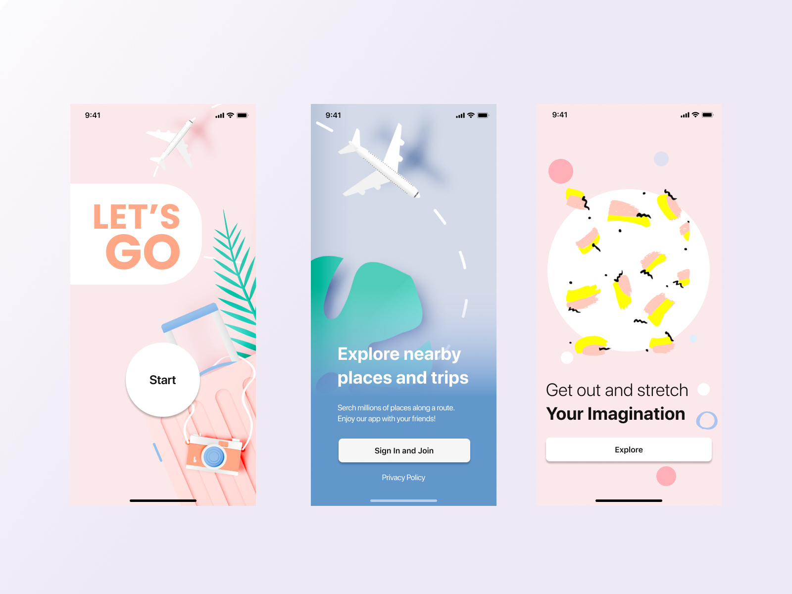

Travel Application “Let’s Go”
It’s time to travel! Stop-stop-stop… But we still live in pandemic time!
This is a massive product project of creating new applications, which should help travel during and after COVID-19 pandemic. We worked as a team of five designers and being bootcampers: for the short time we were responsible for all aspects of design, from conceptualization and user research, to design execution and production, including developing wireframes, user flow diagrams, all visual elements, layouts and photographs.
Type: UX/UI, Product Design
Time: 3 weeks
My role: UX/UI designer, UX Researcher


Overview
We have decided to create an app that is focused on the user’s needs for traveling during and after a pandemic. Before our research we think that it should be a Q&A for anyone confused about traveling right now, as well as the latest news on travel restrictions at home and abroad, how to stay healthy and what you need to know about flying.
We decided to focus on these questions:
We have decided to create an app that is focused on the user’s needs for traveling during and after a pandemic. Before our research we think that it should be a Q&A for anyone confused about traveling right now, as well as the latest news on travel restrictions at home and abroad, how to stay healthy and what you need to know about flying.
Goals
Find pain points.that users may have about traveling
Problem
Want to understand what safety measures travelers want to see in place post covid pandemic.
Solution
Develop the travel app for users, who would love travel. The goal is to enhance personal interactions and supplement our relationships while traveling, nurturing our human needs to connect with others.


User Research
Our team made Proto Persona for our Future Travel App, proto-personas are based on the assumptions of the stakeholders, and further checked against actual data.


Survey
My team and I created a survey to gather as much quantitative data as possible. We conducted a survey that contained 13 open ended questions with 50 responses.
Identifying user needs / Affinity Diagram
Once we gathered enough quantitative and qualitative data we created an Affinity Diagram to find similarities within our interviews so we could dig deeper creating smaller categories.
Empathy Map
As UX designers, we will start the design process by conducting user research — building Empathy Map with our target users and identifying exactly what they need from the product we are designing.


Insight ✨
People feel frustrated and stressed when they travel with friends because lifestyles may not always coincide with each other.Groups traveling together need help organizing a calm vacation.
POV Statement
We are aiming to develop a collaborative trip-planning service focusing on centralizing all travel plans for users. We have observed through user feedback the biggest pain point is traveling and planning with others. How might we develop a digital application that allows people who travels with friends to easily communicate and collaborate with family and friends by ranking in real time priority, satisfaction and fulfillment?
Prioritization Matrix
Our goal is to deliver most value to users and objectively figure out which ideas and features should be considered a priority. After our research, we decided to make an application which should help users travel with small groups of people (family or friends), and manage all vacation-tasks as a group.


User Flow Diagram
For the user flow we chose the most common task that every user would like; to manage a vacation calendar more effectively. To make it more dramatic and challenged we narrowed the flow with group chats.


Sketch Wireframes
Ideating led us to different visions for the layout, and what can better calibrate what’s best for our users than A/B testing? We put both of these paper versions in front of different testers, and adopted the best of both. For instance, the ability to manage calendar and all new team events, a customized calendar on the dashboard and progress bar.


Hi-Fi prototype & Next steps
Organic users growth after official launch
Next steps:
- Adapt to the current situation, add more remote-friendly solutions
- Design other pages: feature to search best vacation, onboarding, news with travel upgrades.
- Send push notifications to the email or phone to remind a student to check-in, submit assignment or attend a workshop.
- User testing for the Hi-Fi version. We still need time to find the best UI style, make UI grids and composition, and work with color theory, heuristic metric creation, typographic, interaction design and iconography.
